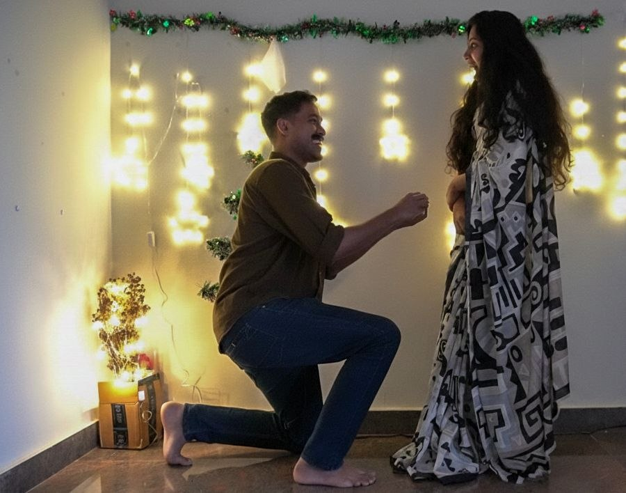
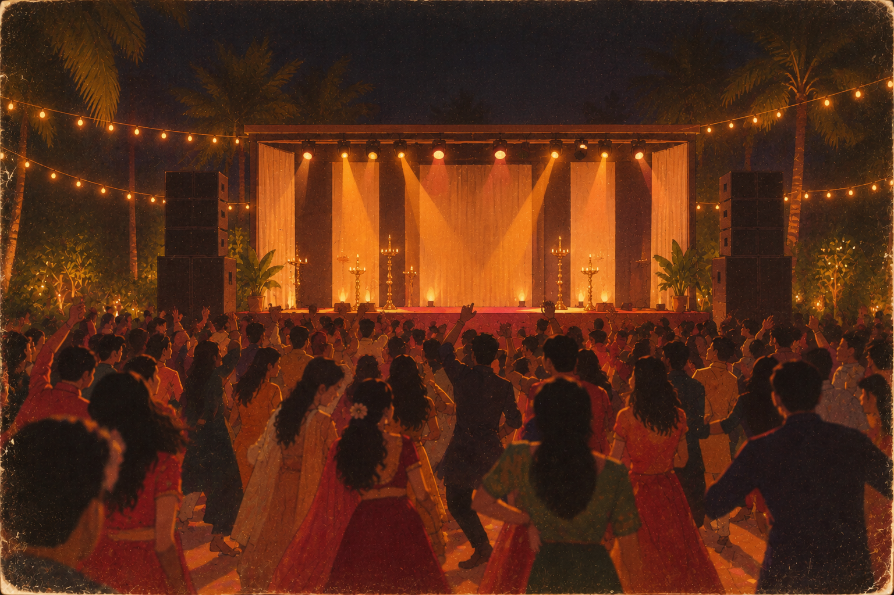
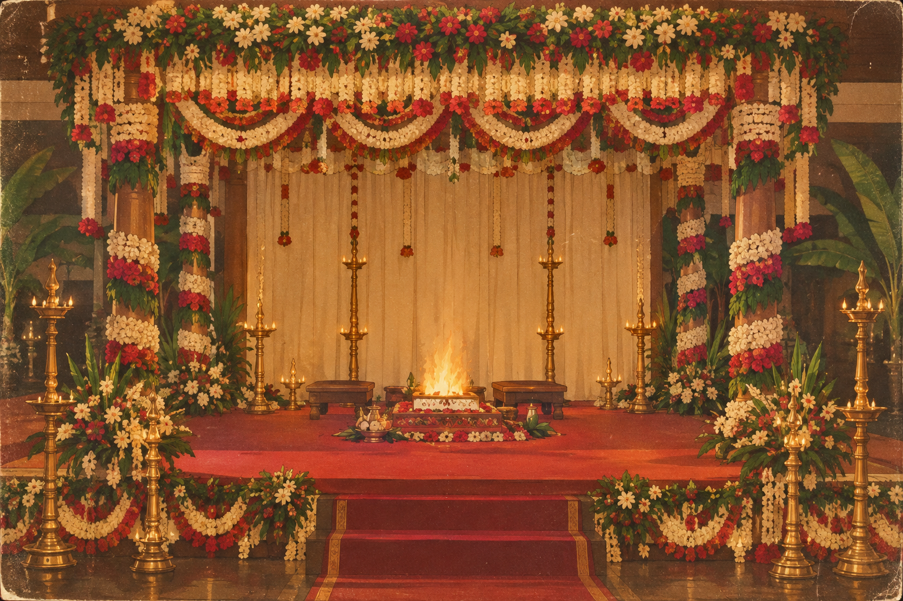
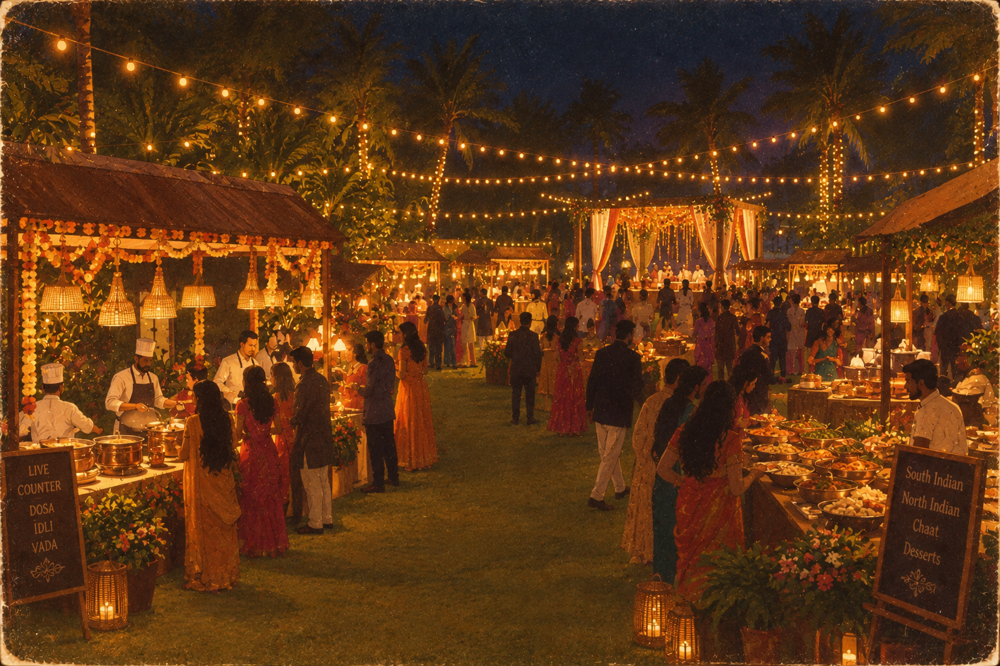
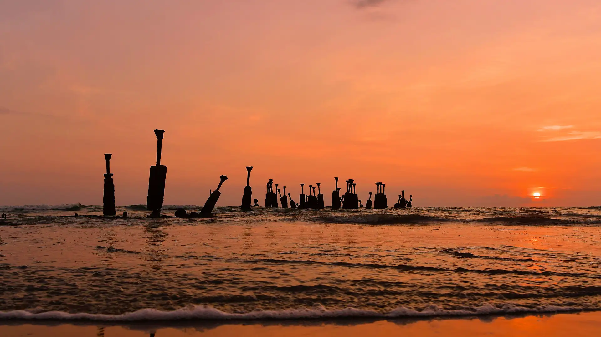

Our story
Seven years ago, it all began with a simple friendship: two extroverts with totally different interests, connecting in a classroom far from home, laughing, teasing, and talking each other’s ears off in their early twenties. Over the years, we shared all our little victories, handled defeat side by side, and celebrated countless moments of pure happiness. Somewhere along the way, that friendship quietly became something deeper. We became best friends, each other’s safe place, biggest cheerleaders, and the very first person we looked for in every high and every low. Through it all, we learned that whatever is meant for you will always find you—and it will never ask you to be anything other than exactly who you are. Years later, here we are: still each other’s absolute favorite person, and ready to kick off our greatest adventure yet!


List of celebrations

November 4, Wednesday: Sangeeth
This is a small celebration held before the wedding, dedicated entirely to
music, dance, and enjoyment. There would be a small stage, where you can
get up and together do a performance. It's very light-hearted and anything
you do would be welcomed with a massive support.
Time: From 5:00 PM onwards.
Venue: Akshay's place, Mavilikadav,
Kozhikode
Dress Code: There's no specific dress code, anything that makes you feel comfortable and you can
dance around!
November 6, Friday: Wedding day
This is the main event, where we will be tying the knot. The ceremony would be followed up with the traditional (all vegetarian) Kerala feast (Sadhya). The venue is an open outdoor location, and after the ceremony and feast, we would have some time to chill and enjoy the view of the backwaters, before heading back home early evening.
Time: 09:30 - 10:30 AM (Ceremony)
Venue: Malabar Boat Yard, Akalapuzha,
Kozhikode
Dress Code: Traditional and festive attire is preferred. This is your chance to try out the
traditional Kerala attire, Saree for women and Mundu & Kurta for men.

November 8, Sunday: Reception
This is the reception held after the wedding day, for all the numerous family and friends to meet
the newly-weds. Aparna's family visits Akshay's family in the morning where we have a small
meet and greet with lots of food. This is followed by a bigger celebration in the evening, with
food, drinks and music and everyone that we have known visiting us.
Time: Entire day, 4:00 PM onwards (Main reception)
Venue: Akshay's place, Mavilikadav,
Kozhikode
Dress Code: There's no specific dress code, anything pretty and comfortable!

About the city you're visiting
Kozhikode: Heart of the Malabar Coast
Tucked away along Kerala’s sunny green coast, Kozhikode (also known as
Calicut) is famous for its friendly locals and welcoming vibe.It has a
fascinating history, too. Back in 1498, Portuguese explorer Vasco da Gama
landed right here at Kappad Beach, putting the city at the center of the
global spice trade.
Today, it is widely loved as Kerala’s food capital. If you visit, you
can’t miss the rich Malabar biryani, the sweet, chewy Kozhikodan halwa, or
the lively bakeries lining the famous Sweet Meat Street. Between its calm
beaches, vibrant arts and literature, and endless chats over hot chai at
local tea stalls, Kozhikode offers a wonderful mix of old-world charm and
unforgettable food.

Practical information
Weather: Early November often sees sporadic,
brief late-afternoon or evening thunderstorm showers driven by the retreating Northeast Monsoon.
However, dry sunny spells dominate the mornings, with temperatures ranging from 25°C to 32°C. The
humidity is very high 80%, so light, breathable clothing is recommended.
Visa: You require a valid passport and
visa to enter India. The short stay e-Visa is the most convenient option. You can apply online at
the official Indian government website: Indian e-Visa. Make sure to apply well
in advance of your travel dates.